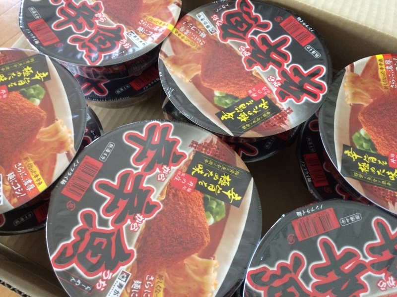
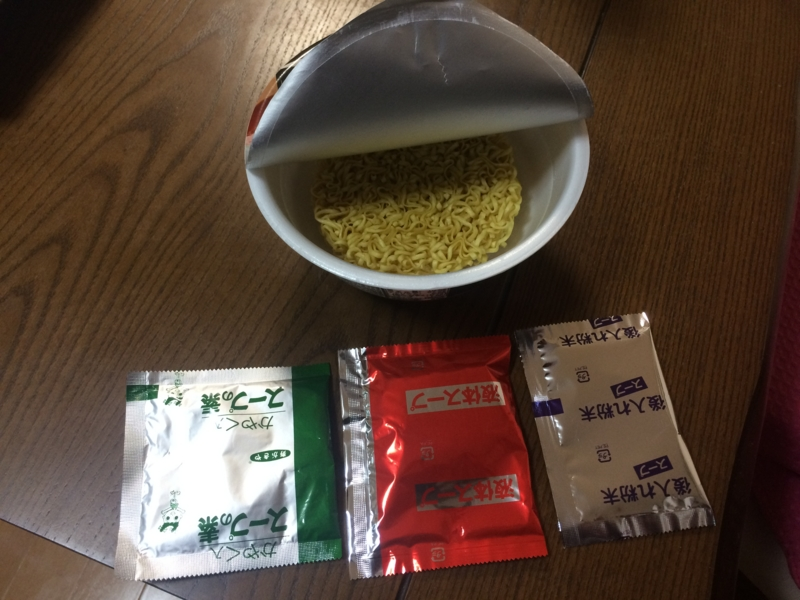
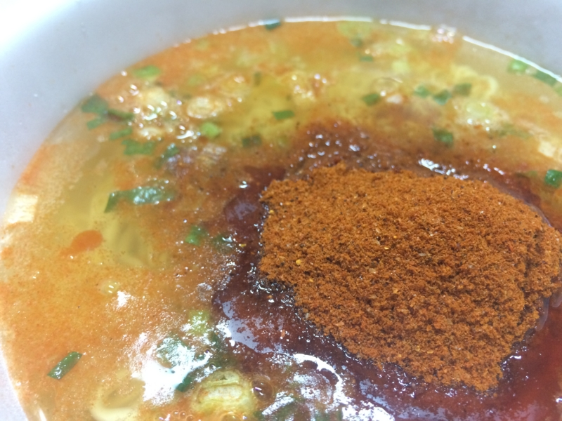
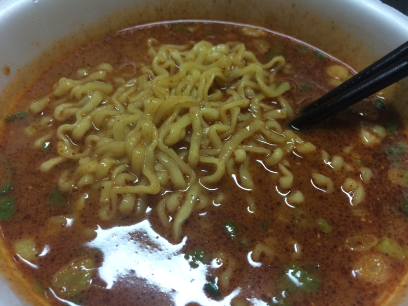

「辛辛魚」が送られてきたので食べてみた。
公開日：
2月1日
怖いもの食べたさある / “http://t.co/gYxEI6Omi5： 寿がきや 麺処井の庄監修 辛辛魚らーめん 136g×12個: 食品・飲料・お酒” http://t.co/PRBZ0doQHO
— 俺、だるやなぎになります。 (@daruyanagi) 2015, 2月 12月2日

ん……なんかうちに「辛辛魚」きたんだけど……たのんだっけ
— 俺、だるやなぎになります。 (@daruyanagi) 2015, 2月 2どなたか存じませんが、ありがとうございます……ありがとうございます……。
2月4日

意を決して食べてみた。
「大変辛いラーメンです。辛いものが苦手な方はご注意ください」という注意書きが、食欲と恐怖心をかきたてる。お尻がやられそうな予感に、穴がむずむずする。

熱湯四分、液体スープと後入れ粉末投入。唐辛子と魚粉が、鼻孔を責めたてる。ちょっとくしゃみした。

麺は太目で、縮れてる。スープは辛く、飲むとむせそう。麺に絡めて啜る。これだったらつけ麺でもいいかもしれないな。
完食。お腹がぐるぐるするけれど、これはこれでおいしい。でも、これ、2週間に1回ぐらいでいいな……1ケース送られてきたんだけど、いつなくなるんだろう？